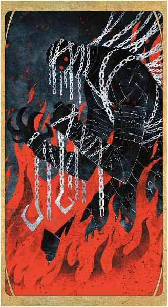

本章详述了三个独一的邪魔，以向主持人提供适合在战役中多次登场的独特反派。每个条目介绍了这个邪魔的背景故事和一些细节，并为如何在你的战役中使用它们作为反派，以及它们的游戏数据。此外，每个邪魔都有一些新的规则要素，用以与这邪魔本身配合使用，或是独立使用。
从万象无常牌中抽到火焰Flames牌会召来一个强大邪魔的怒火。本章所述的三个邪恶存在正是为扮演这一角色而生，但你也可以用其他方式来将它们融入自己的战役之中。角色也许会在偶然间发现关于这些魔头或是其爪牙之恶行的线索，或者，你也可以将其中一个魔头作为整个战役的核心。这些邪魔的等级区间很广泛，在大多数战役中应该都很有实用性，但你仍可以随时修改这些邪魔的数据，以使其实力更加适合你的玩家们——记住，可能性就像无底深渊的位层一样无穷无尽！